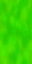
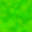
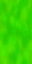
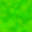
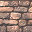
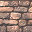
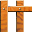
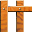
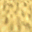
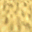

Это вкладка изображений, там мои изображения из моего пк
Вкладки:
Главная ИзображенияЭти изображения беты Супер Марио 64.Предположительно он предналежит уровню Bomb-omb Village,отмененого уровня игры
 



 

 

 


Это текстуры раннего двора замка.Также присуствуют текстуры из Раннего интерйера замка и уровня Castle